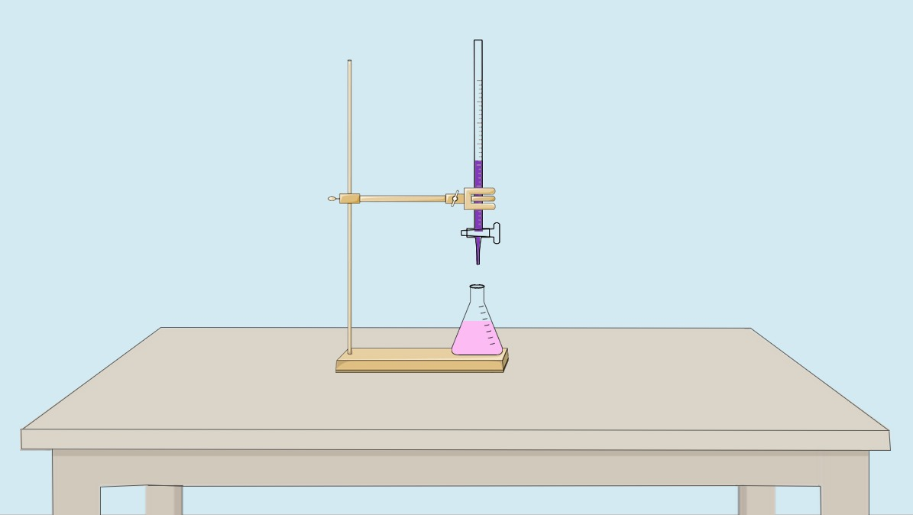

The titration is continued until a permanent light pink colour appears, indicating the end point.
KMnO₄ volume is noted to determine Fe₂O₃% in cement sample.

👇
Weighing Results
The precipitate has been successfully weighed. Now click the "Calculate Iron
Oxide (Fe₂O₃) %" button
to determine the percentage of calcium oxide in the cement sample.